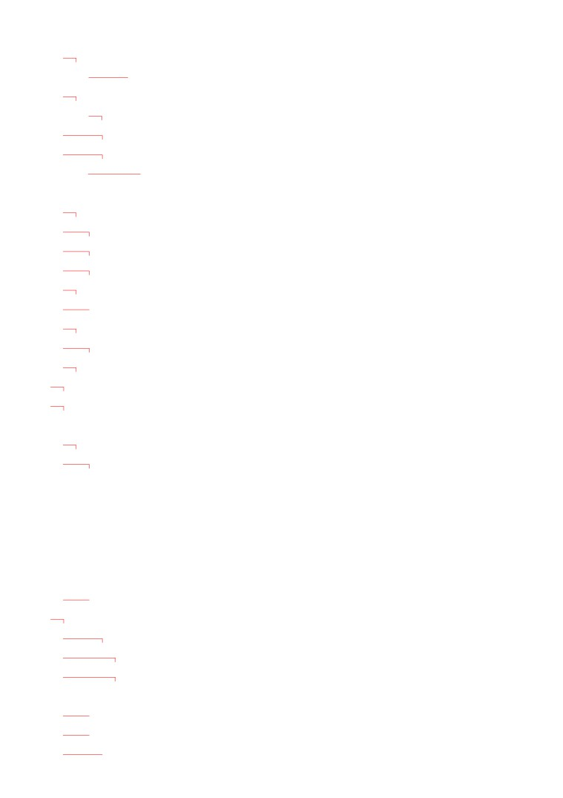
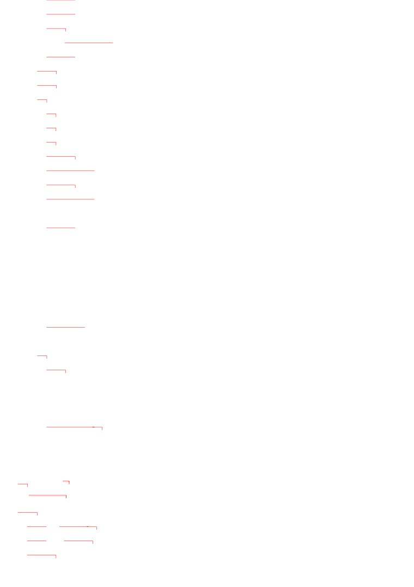
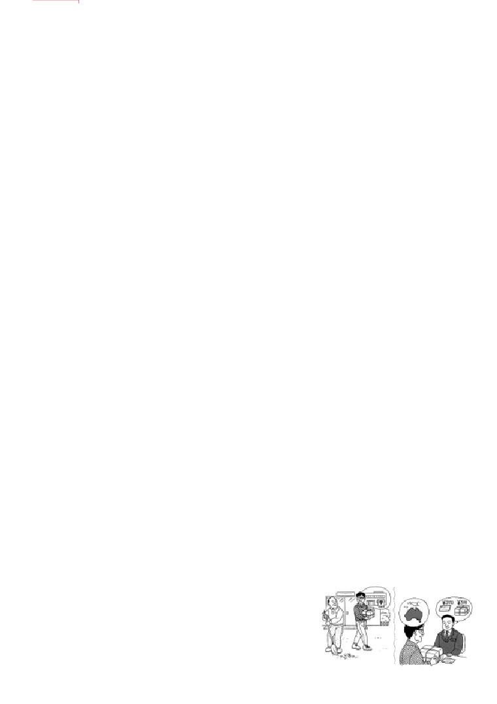
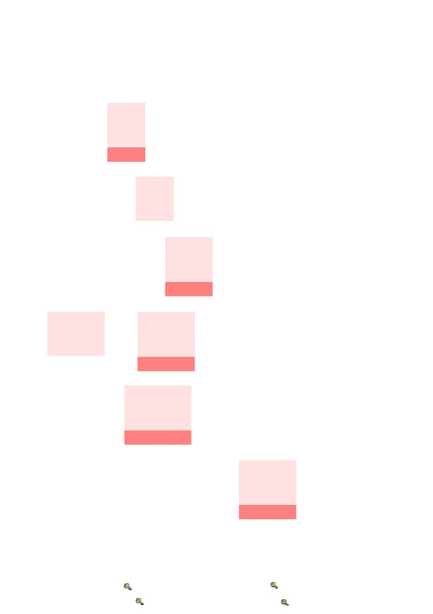
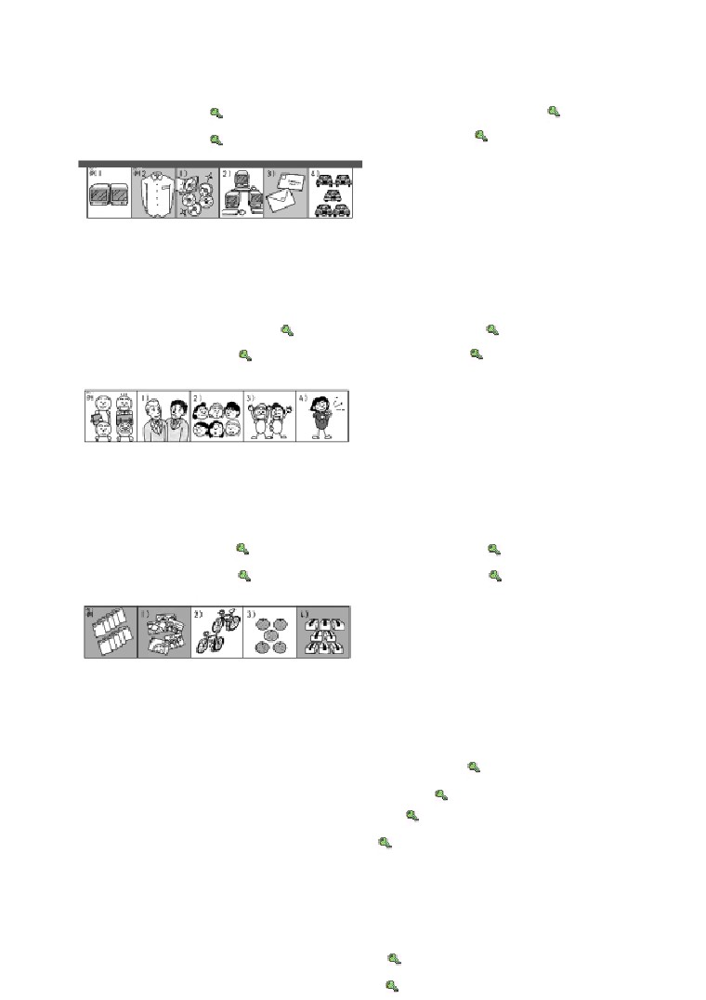
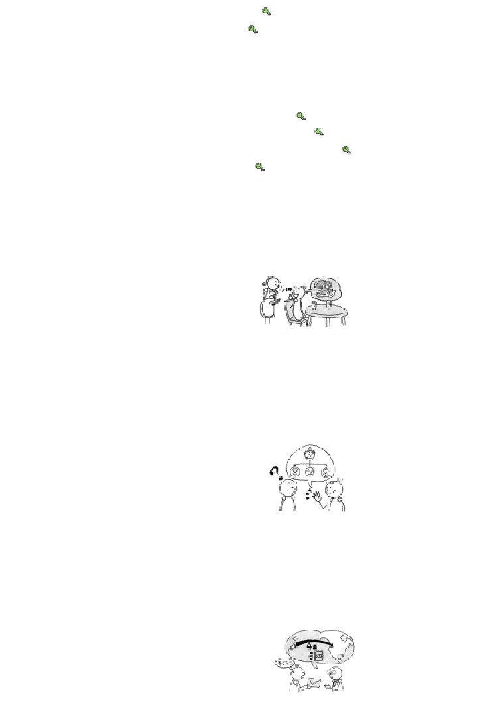
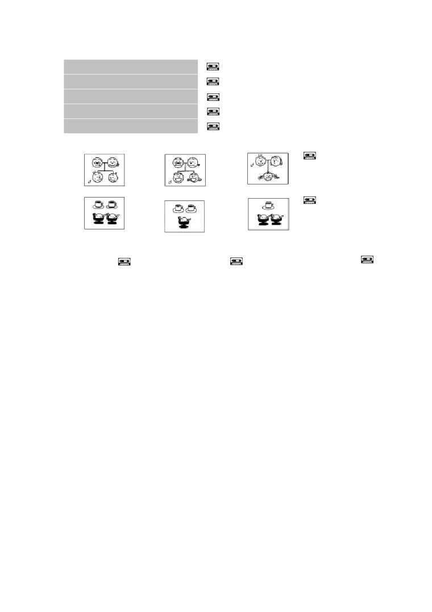
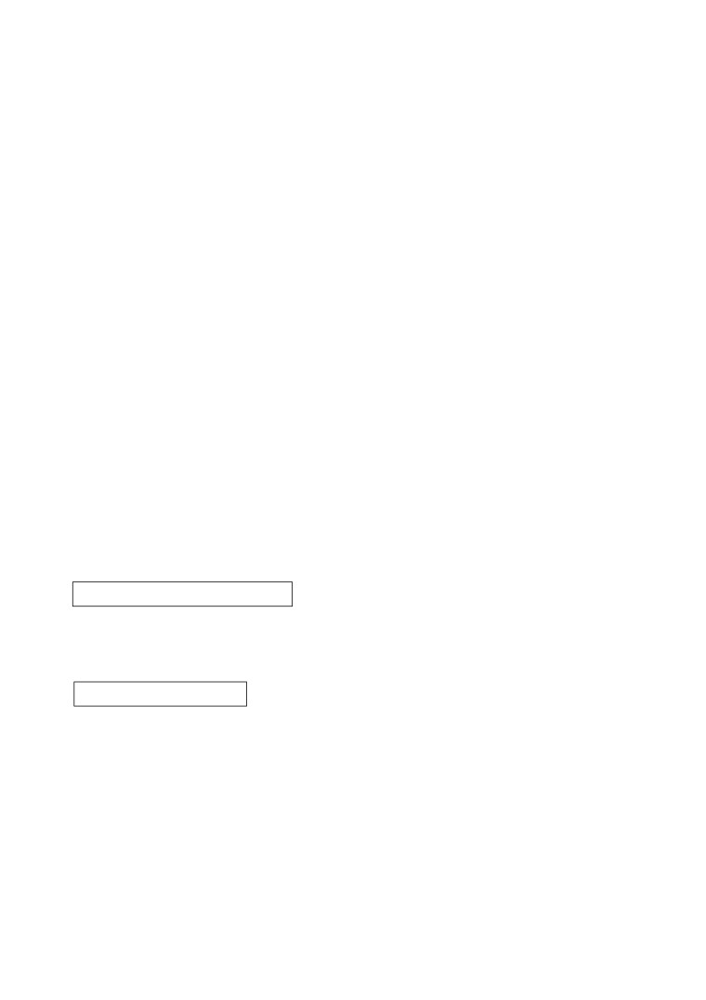

第 １１ 課
課:11 (頁:1/9)
ことば
1.
います
有〔
孩子〕
［こどもが～］
［子どもが～］
2.
います
在〔
日本〕
［にほんに～］
［日本に～］
3. かかります
花費（金錢或時間）
4.
やすみます
休みます
向〔
公司〕
請假
［かいしゃを～］
［会社を～］
5. ひとつ
1つ
一個（用於計算物品）
6. ふたつ
2つ
二個
7. みっつ
3つ
三個
8. よっつ
4つ
四個
9. いつつ
5つ
五個
10. むっつ
6つ
六個
11. ななつ
7つ
七個
12. やっつ
8つ
八個
13. ここのつ
9つ
九個
14. とお
10つ
十個
15. いくつ
幾個
16. ひとり
1人
一個人
17. ふたり
2人
二個人
18.
…にん
…人
…個人
19.
…だい
…台
（用於計算機械、車輛等機械類時）
20.
…まい
…枚
（用於計算紙張、郵票等薄的物品時
21.
…かい
…回
…次
22. りんご
蘋果
23. みかん
橘子
24. サンドイッチ
三明治
25. カレー［ライス］
咖哩〔飯〕
26. アイスクリーム
冰淇淋
27. きって
切手
郵票
28. はがき
明信片
29. ふうとう
封筒
信封

課:11 (頁:2/9)
30.
そくたつ
速達
限時信
31. かきとめ
書留
掛號信
32.
エアメール
航空郵件，航空信
（ こうくうびん ）
（ 航空便 ）
33. ふなびん
船便
船運
34. りょうしん
両親
雙親
35. きょうだい
兄弟
兄弟姊妹
36. あに
兄
（我）哥哥
37. おにいさん
お兄さん
（他人的）哥哥
38. あね
姉
（我）姊姊
39. おねえさん
お姉さん
（他人的）姊姊
40. おとうと
弟
（我）弟弟
41. おとうとさん
弟さん
（他人的）弟弟
42. いもうと
妹
（我）妹妹
43. いもうとさん
妹さん
（他人的）妹妹
44. がいこく
外国
外國
45.
…じかん
…時間
…小時
46.
…しゅうかん
…週間
…星期
47.
…かげつ
…か月
…個月
48.
…ねん
…年
…年
49.
～ぐらい
～左右
50. どのぐらい
多久
51. ぜんぶで
全部で
一共
52. みんな
全部，全體
53.
～だけ
只～，僅～
54. いらっしゃいませ。
歡迎光臨（商店、行號在顧客光臨時
用）
かい わ
■会話
てん き
いい［お］天気ですね。
真是好天氣呀。
で
お出かけですか。
您外出呀。
ちょっと ～まで。
我去一下～。
い
行って いらっしゃい。
你慢走（會再回來）。
い
行って まいります。
我走了（會再回來）。
それから
還有，另外
---以下單字請自行練習發音---

課:11 (頁:3/9)
オーストラリア
澳洲
ぶん けい
文型
かい ぎ しつ
なな
1. 会議室に テーブルが
7つ あります。
に ほん
ねん
2. わたしは 日本に
1年 います。
れい ぶん
例文
か
1.
りんごを いくつ 買いましたか。
よっ
か
…4つ 買いました。
えん
きっ て
まい
まい
2.
80円の 切手を 5枚と はがきを 2枚 ください。
ぜん ぶ
えん
…はい。全部で 500円です。
ふ じ だい がく
がい こく じん
せん せい
3. 富士大学に 外国人の 先生が いますか。
にん
じん
…はい、 3人 います。 みんな アメリカ人です。
か ぞく
なん にん
4. 家族 は 何人ですか。
にん
りょう しん
あね
あに
…5人です。 両親と 姉と 兄が います。
しゅうかん
なん かい
5.
1週間に 何回 テニスを しますか。
かい
…2回ぐらい します。
た なか
ご
べん きょう
6.
田中さんは どのくらい スペイン語を 勉強しましたか。
げつ べん きょう
…3か月 勉強しました。
げつ
じょう ず
えっ、3か月だけですか。 上手ですね。
おお さか
とう きょう
しん かん せん
7. 大阪から 東京まで 新幹線で どのくらい かかりますか。
じ かん はん
…2時間半 かかります。
かい わ
会話
ねが
これ、お 願いします
かん り にん
てん き
で
管 理 人：
いい 天気ですね。お出かけですか。
ゆう びん きょく
ワ ン： ええ、ちょっと 郵便局まで。
かん り にん
い
管 理 人：
そうですか。行って いらっしゃい。
い
ワ ン： 行って まいります。
----------------------
そく たつ
ねが
ワ ン： これ、速達で お願いします。
ゆう びんきょく いん
えん
郵便局員：
はい、オーストラリアですね。370円です。
に もつ
ねが
ワ ン： それから この 荷物も お願いします。
ゆう びんきょくいん
ふな びん
こう くう びん
郵便局員：
船便ですか、航空便ですか。

課:11 (頁:4/9)
ワ
ン： 船便は いくらですか。
ゆう びんきょくいん
えん
郵便局員：
500円です
ワ ン： どのくらい かかりますか。
ゆう びんきょくいん
げつ
郵便局員：
1か月ぐらいです。
ふな びん
ねが
ワ ン： じゃ、船便で お願いします。
れん しゅう
練習 Ａ
か
1. みかんを
いつつ
買いました。
やっつ
とお
いくつ
…………か。
えん
きっ て
2.
90円の 切手を
1まい
ください。
2まい
5まい
かい しゃ
かい こく じん
3.
この 会社に 外国人が
ひとり
います。
ふたり
4 にん
なんにん
……か。
えい が
み
4.
1しゅうかん
に
1かい
映画を 見ます
1かげつ
2かい
1ねん
5かいぐらい
なんかい
…………………………か。
くに
に ほん ご
べんきょう
5. わたしは 国で
5しゅうかん
日本語を 勉強しました。
6かげつ
1ねんぐらい
あなたは ……
どのくらい
………………………か。
くに
に ほん
ひ こう き
6. わたしの 国から 日本まで 飛行機で
4じかん
かかります。
5じかんはん
12じかん
あなたの ……………………………………
どのくらい
…………か
れん しゅう
練習 Ｂ
れい
1.
例： りんご →
りんごが いくつ ありますか。
みっ
……3つ あります。
たまご
1)
いす →
2)
卵 →
3)
かばん →
4)
かぎ →

れい
なん だい
課:11 (頁:5/9)
2.
例1： テレビ →
テレビが 何台 ありますか。
だい
……2台 あります。
れい
なん まい
例2： シャツ →
シャツが 何枚 ありますか。
まい
……1枚 あります。
1)
ＣＤ →
2)
コンピューター
→
ふう とう
じ どう しゃ
3)
封筒 →
4)
自動車 →
れい
がく せい
がく せい
なん にん
3.
例： 学生
→
学生が 何人 いますか。
にん
……4人 います。
がい こく じん
しゃ いん
おんな
ひと
1)
外国人の 社員 →
2)
女の 人 →
おとこ
こ
こ
3)
男の 子 →
4)
子ども →
れい
か
なん まい
か
4.
例： 買います →
はがきを 何枚 買いましたか。
まい
か
……10枚 買いました。
と
か
1)
撮ります →
2)
買います →
た
おく
3)
食べます →
4)
送ります →
れい
げつ えい が
み
げつ
なん かい
えい が
み
5.
例： 1か月・映画を 見ます（ 1 ） →
1か月に 何回 映画を 見ますか。
かい
み
……1回 見ます。
にち かの じょ
てん わ
1)
1日・彼女に 電話を かけます （ 2 ） →
しゅうかん
に ほん ご
なら
2)
1週間・日本語を 習います （ 3 ） →
げつ とう きょう
い
3)
1か月・東京へ 行きます （ 1 ） →
ねん くに
かえ
4)
1年・国へ 帰ります （ 1 ） →
れい
せん げつ かい しゃ
やす
よっ か
6.
例： 先月 会社を 休みました（ 4日 ）
せん げつ
なん にち
かい しゃ
やす
→ 先月 何日 会社を 休みましたか。
よっ か
やす
……4日 休みました。
だい がく
べん きょう
ねん
1)
大学で 勉強します（ 4年 ） →
りょ こう
しゅうかん
2)
旅行を しました（ 2週間 ） →

まい にち はたら
じ かん
課:11 (頁:6/9)
3)
毎日 働きます（ 8時間 ） →
やす
ぷん
4)
休みます（ 10分だけ ） →
れい
に ほん ご
べんきょう
げっ
7.
例： 日本語を 勉強しました（ 3か月 ）
に ほん ご
べんきょう
→ どのくらい日本語を 勉強しましたか。
げつ
べんきょう
……3か月 勉強しました。
りょ こう
しゅうかん
1)
旅行を します（ 1週間ぐらい ） →
ご
なら
ねん
2)
フランス語を 習いました （ 5年 ） →
はたら
げつ
3)
スーパーで 働ました （ 4か月ぐらい ） →
に ほん
ねん
4)
日本に います（ 2年 ） →
れん しゅう
練習 Ｃ
1. Ａ: いらっしゃいませ。
ふた
Ｂ: サンドイッチを 2つ ください
Ａ: かしこまりました。
1)
ジュース
ひと
1つ
2)
アイスクリーム
よっ
4つ
3)
カレーライス
いつ
5つ
か ぞく
なん にん
2. Ａ: 家族は 何人ですか。
にん
Ｂ:
4人です
はは
おとうと
ふたり
母と
弟が
2人 います。
つま
こ
1)
妻 子ども
ふたり
2人
ちち
きょうだい
2)
父 兄弟
ふたり
2人
りょう しん
いもうと
3)
両親
妹
ひとり
1人
そく たつ
3. Ａ: これは アメリカまで 速達で いくらですか。
えん
Ｂ：
630円です。
Ａ: どのくらい かかりますか。
よっ か
Ｂ:
4日ぐらいです。
ふな びん
えん
1)
船便
2,500円
しゅうかん
2週間
えん
2)
エアメール 1,870円
しゅうかん
1週間

かき とめ
えん
課:11 (頁:7/9)
3)
書留
940円
しゅうかん
1週間
もん だい
問題
れい
にん
1.
1)
…例： 4人です。
れい
よっ
2)
…例： 4つあります。
れい
じ かん
3)
…例： 5時間かかります。
れい
げつ べん きょう
4)
…例： 2か月勉強しました。
れい
かい み
5)
…例： 1回見ます。
2.
1)
①
②
③
2)
①
②
③
3.
1)
（ ○ ）
2) （ × ）
3) （ × ）
れい
4. 例： みかんが
（ 8→ やっつ ） あります。
こ
1)
子どもが （ 2→ ふたり ） います。
くるま
2)
車が （ 4→ よんだい ）あります。
きっ て
か
3)
切手を （ 10→ じゅうまい ） 買いました。
4)
りんごを （ 5→ いつつ ） ください。
れい
こ
なん にん
にん
5. 例： 子どもが
（ 何人 ） いますか。……3人 います。
みっ
1)
いすが （ いくつ ） ありますか。……3つ あります。
まい にち
なん じ かん
はたら
じ かん はたら
2)
毎日 （ 何時間 ） 働きますか。……8時間 働きます。
きっ ぷ
なん まい
か
まい
か
3)
切符を （ 何枚 ） 買いますか。……2枚 買います。
りょう
じ てん しゃ
なん だい
だい
4)
寮に 自転車が （ 何台 ） ありますか。……5台 あります。
れい
でん しゃ
じ かん
6.
例： 電車 （ で ） 1時間 （ × ）かかります。
しゅう かん
かい
かの じょ
でん わ
1)
1週間 （ に ） 3回 （ × ） 彼女に 電話を かけます。
に もつ
ふな びん
2)
この 荷物は アメリカまで 船便 （ で ） いくらですか。
に ほん
ねん
3)
日本 （ に ） 2年 （ × ） います。
いつ
4)
りんご （ を ） 5つ （ × ） ください。
えん
……はい。 600円です。
た なか
しゅ じん
こ
ふたり
た なか
か ぞく
7.
1)
田中さんは ご主人と 子どもが 2人 います。 田中さんの 家族は
ぜん ぶ
なん にん
全部で 何人ですか。
にん
……4人です。
よっ
た
となり
課:11 (頁:8/9)
2)
りんごを 15 もらいました。 4つ 食べました。 隣の うちの
ひと
むっ
いま
人に 6つ あげました。 今 りんごが いくつ ありますか。
いつ
……5つあります。
えん
きっ て
まい
えん
きっ て
まい
か
ぜん ぶ
3)
80円の 切手を 5枚と、50円の 切手を 5枚 買います。 全部で
いくらですか。
えん
……650円です。
ちゅう ごく ご
げつ
なら
げつ
かい
4)
わたしは 中国語を 3か月 習いました。 1か月に 8回
べんきょう
かい
じ かん
ぜん ぶ
なん じ かん
なら
勉強しました。 1回は 2時間です。 全部で 何時間 習いましたか。
じ かん なら
……48時間習いました。
文法
１
數量的說法
1) ひとつ、ふたつ……とお
計算物品時的說法。11以上用數字計算。
2)量詞
計算人、物時，或要表示某種數量時，對象不同使用的量詞也會不同。量詞直接
放在數字後面使用。
にん
ひ と り
－人
計算人數。但是，一個人時說「ひとり（１人）
」，
ふ た り
にん
兩個人時用「ふたり（２人）
」，「４人
」要唸「よにん」。
だい
－台
計算機械，或汽車、自行車等交通工具時使用。
まい
－枚 計算薄或扁平的物品。紙張、襯衫、盤子、CD等。
かい
－回
計算次數。
ふん
－分
分鐘
じ かん
－時間 小時
にち
－日
天數
跟日期的說法一樣，只有一天要說成「いちにち
」。
しゅう かん
－週間 星期
げつ
－か月 月數
ねん
－年
年數
其他量詞參考書尾的附錄。
3)數量詞的用法
數字加上量詞叫做數量詞。數量詞一般直接放在要修飾的動詞前面。但是表示時
間長度的數量詞不在此限。
よっ
か
① りんごを ４つ 買いました。
買了 ４個蘋果。
がい こく じん
がく せい
ふ た り
② 外国人の 学生が ２人 います。
有兩個外國學生。
くに
げつ
に ほん ご
べん きょう
③ 国で ２か 月 日本語を 勉強しました。 在國內學了兩個月的日語。
4)疑問詞
(1)用「ひとつ、ふたつ……」計算的物品數量，用「いくつ」詢問。
か
④ みかんを いくつ 買いましたか。
買了幾個橘子？

やっ
か
課:11 (頁:9/9)
…８つ 買いました。
…買了 ８個。
(2)詢問帶有量詞的數字時，用「なん」。
かい しゃ
がい こく じん
なん にん
⑤ この 会社に 外国人が 何人 いますか。
にん
…５人 います。
這家公司有幾個外國人？
…有
５
個。
まい ばん
なん じ かん
に ほん ご
べん きょう
⑥ 毎晩 何時間 日本語を 勉強しますか。
じ かん
べん きょう
… ２時間 勉強します。
每天晚上念幾個小時的日語？
…念
２
個小時。
(3)用「どのくらい」詢問時間的長度。時間的長度單位有很多種。
に ほん ご
べん きょう
⑦ どのくらい 日本語を 勉強しましたか。
ねん
べん きょう
…３年 勉強しました。
學多久的日語了？
…學
３
年了。
おお さか
とう きょう
⑧ 大阪から 東京まで どのくらい かかりますか。
しん かん せん
じ かん はん
…新幹線で ２ 時間半 かかります。
從大阪到東京要花多少時間呢？
…搭新幹線要兩個半小時。
5) ぐらい
「ぐらい」放在數量詞後面，表示大約的意思。
がっ こう
せん せい
にん
⑨ 学校に 先生が ３０ 人ぐらい います。 學校大約有 30位老師。
ふん
⑩ １５ 分ぐらい かかります。
大約要花 15分鐘左右。
かい
２
數量詞（期間） に －回 動詞
使用這個句型，可以表達出進行某動作的頻率。
げつ
かい
えい が
み
⑪ １か 月に ２回 映画を 見ます。
一個月看兩次電影。
３.
數量詞 だけ／名詞 だけ
「だけ（只）」放在數量詞或名詞後面，表示只有這些，沒有其他的的意思。
でん き
がい こく じん
しゃ いん
ひ と り
⑫ パワー 電気に 外国人の 社員が １人だけ います。
動力電氣公司只有一個外國職員。
やす
にち よう び
⑬ 休みは 日曜日だけです。
休假只有星期天。